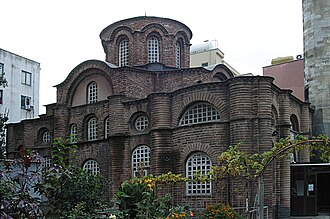

แนะนำ
L’actuelle mosquée Bodrum fut au temps de l’Empire byzantin l’église du monastère du Myrelaion à Constantinople, aujourd’hui Istanbul. Elle fut transformée en mosquée vers 1500 par Mesih Paşa Camii, d’où son nom actuel. De même que la présente mosquée Fenari Isa et l’église du Sauveur de la Porte Chalkê, elle marque la première phase de l’architecture du Moyen Empire byzantin avec l’apparition à Constantinople d’églises à plan centré reposant sur quatre piliers principaux.
جامع بودروم في إسطنبول. ويعرف أيضا باسم مسجد مسيح باشا نسبة إلى الوزير الفاتح مسيح باشا بعد فتحه لمدينة إسطنبول في عهد السلطان بايزيد الثاني سنة 1500م. وقد تم تحويله من كنيسة بيزنطية أرثودكسية كانت تحمل اسم ميرليون إلى مسجد وجامع حمل اسم جامع بودروم. بُنِيَ على الطِّراز البيزنطي ويظهِرُ تَشابُهاتٍ مِعماريةٍ قَويّة مع جامع فناري عيسى.
Bodrum Mosque in Istanbul, Turkey, is a former Eastern Orthodox church converted into a mosque by the Ottomans. The church was known under the Greek name of Myrelaion.
Bodrum Mesih Paşa Camii veya eski adıyla Mirelayon Kilisesi, İstanbul'da Laleli yakınındaki Doğu Roma döneminden kalma dini yapıdır.
Masjid Bodrum, atau yang sebelumnya bernama Gereja Myrelaion adalah sebuah masjid bersejarah peninggalan Bizantium yang berada di distrik Fatih, Provinsi Istanbul, Turki. Bangunan ini awalnya merupakan sebuah gereja Ortodoks Timur yang dibangun pada tahun 922, dan kemudian bangunan ini diubah menjadi masjid setelah peristiwa Penaklukan Konstantinopel pada tahun 1453.
Myrelaion in Istanbul ist eine zur Moschee umgewidmete ehemalige griechisch-orthodoxe Kirche. Der griechische Name verweist auf die ursprünglich hier aufbewahrte Myrrhe-Reliquie. Das Gebäude steht in der Nachbarschaft Lâleli des Stadtteils Fatih.
La mezquita de Bodrum es una iglesia ortodoxa de Estambul, convertida en mezquita por los otomanos. La iglesia ortodoxa tenía el nombre griego de Myrelaion.
La moschea Bodrum è una ex chiesa ortodossa bizantina convertita in moschea dagli Ottomani che si trova ad Istanbul. La chiesa era un tempo nota con il nome greco di Myrelaion.
A Mesquita de Bodrum é uma antiga igreja ortodoxa grega convertida numa mesquita pelos otomanos. A igreja era então conhecida pelo nome grego Mireleu.
博德鲁姆清真寺，意为“地下室”，位于土耳其伊斯坦布尔法提赫区，原为东正教没药教堂，由羅曼努斯一世建于10世纪，在君士坦丁堡大皇宮废墟以西1公里，距离马尔马拉海不远。该堂是其新皇宫没药宫附近的私人葬礼教堂，这打破了6个世纪以来拜占庭皇帝埋葬于圣使徒教堂的传统。948年羅曼努斯一世被流放后，没药宫改为修女院。他死后也葬于堂内。1203年曾遭十字军破坏。13世纪末修复。1453年君士坦丁堡陷落后，奥斯曼帝国将其改为清真寺。
Миреле́йон — дворец византийского императора Романа Лакапина в Константинополе, от которого сохранилась единственная церковь начала X века, обстроенная со всех сторон современными зданиями и действующая в качестве мечети Бодрум-джами.
บนแผนที่
เอกสารและลิงก์
- Wikipédia — Français
- Wikipédia — العربية
- Wikipédia — English
- Wikipédia — Türkçe
- Wikipédia — Bahasa Indonesia
- Wikipédia — اردو
- Wikipédia — Deutsch
- Wikipédia — Español
- Wikipédia — Italiano
- Wikipédia — Português
- Wikipédia — 中文
- Wikipédia — Русский
- Wikidata — Q2305473
ข้อมูล: วิกิสนเทศ (CC0) ปรับปรุงทุก 3 เดือน ปีที่แสดงคือปีที่สร้างอาคารเก่าที่สุดที่ทราบ: สำหรับอาคารที่กลายเป็นมัสยิดภายหลัง (เช่น ฮาเจียโซเฟีย) จะเป็นปีของอาคารเดิม ภาพถ่าย: วิกิมีเดียคอมมอนส์ ผู้ถ่ายและสัญญาอนุญาตอยู่ในหน้าของแต่ละภาพ